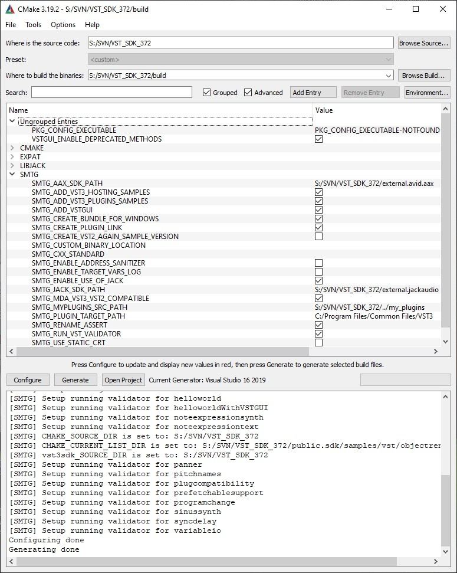

How to setup up my system for VST 3
On this page:
Related pages:
In order to build VST 3 plug-ins, you need the source code of the VST 3 (interface definition), an IDE/compiler, cmake and a VST 3 host application.
Get the source code
From the downloaded vstsdk.zip file
Download the VST SDK: check VST SDK Download.
Unpack the zip file to a development folder on your computer.
From GitHub:
git clone --recursive https://github.com/steinbergmedia/vst3sdk.git
Get an IDE for development
For Windows
On Windows, we recommend that you to use Visual Studio C++ or Visual Studio Code. You can get it for free here https://visualstudio.microsoft.com/free.
For MacOS
On MacOS, a first choice is Xcode (available here https://developer.apple.com/xcode/).
For Linux
In order to build the SDK successfully, you need an Ubuntu-based Linux distribution. Other distributions might work as well, but are not tested.
- Download Linux: http://www.ubuntu.com or https://www.linuxmint.com
- Install it directly or in a virtual machine like Parallels. We used and tested on Ubuntu 22.04 LTS.
Package Requirements
Building the SDK examples requires installation of several packages:
Required:
sudo apt-get install cmake gcc "libstdc++6" libx11-xcb-dev libxcb-util-dev libxcb-cursor-dev libxcb-xkb-dev libxkbcommon-dev libxkbcommon-x11-dev libfontconfig1-dev libcairo2-dev libgtkmm-3.0-dev libsqlite3-dev libxcb-keysyms1-dev
ⓘ Note
On Raspbian/Debian, replace "libxcb-util-dev" with "libxcb-util0-dev"
Optional:
sudo apt-get install subversion git ninja-build
A recommended IDE (optional): QTCreator
sudo apt-get install qtcreator
ⓘ Note
You can also use the bash file "setup_linux_packages_for_vst3sdk.sh" included in the VST3_SDK/tools folder!
ⓘ Note\
- Instead of gcc compiler, a recent version of clang compiler will also work!
- libgtkmm3 is required for VSTGUI and the editorhost example!
- Jack Audio is required for audiohost example!
Get cmake
In order to control the compilation process and create an IDE project, VST SDK uses the open-source and cross-platform tool cmake.
You can download cmake here: https://cmake.org/download/ or use a package manager for your OS (Linux).
You can use it as a command line tool or use the cmake executable with GUI. cmake-gui is included in the cmake package:

Specific on Windows
You have to adapt your Windows right access to allow creation of symbolic links for VST 3 plug-ins: Check HERE!
Get a VST 3 host application
You can use your favorite VST 3 host application, see here for some examples, or you can use the VST 3 Plug-in Test Host application included in the VST SDK.